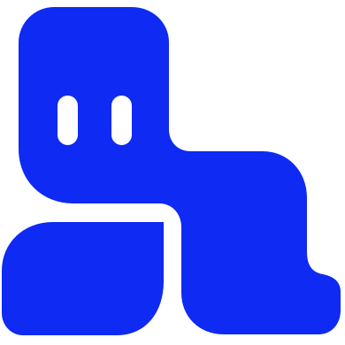

Tabs IDEWork in tabs.
Switch projects. Make the toolbar yours. Try it with two sample projects in one window.
Field Notes · BrowserInteractive demo
Try the workspace
Sample sites, commands, and conversations run as a simulation.
- Switch projects
- Save a browser tab
- Save a terminal tab
- Open Quick Actions